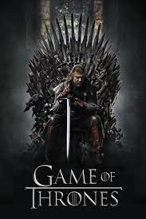

Cobra Kai
snopsis: Cobra Kai es la secuela de la famosa saga cinematográfica Karate Kid. La serie sigue la historia 30 años después del campeonato de 1984, en el que Johnny no se encuentra en el mejor momento de su vida por lo que decide volver a abrir el famoso Dojo Cobra Kai para darle un giro.

peaky blinders
snopsis: Peaky Blinders es un drama de BBC que narra la historia de la familia gitana Shelby y su banda de gángsters, un grupo de personas características por sus boinas con cuchillas y dueñas de los asuntos ilegales, que dominan las apuestas clandestinas y se rigen mediante extorsiones.

Stranger Things
A raíz de la desaparición de un niño, un pueblo desvela un misterio relacionado con experimentos secretos, fuerzas sobrenaturales aterradoras y una niña muy extraña. Ve todo lo que quieras.

Game of Thrones
snopsis: En un mundo fantástico y en un contexto medieval varias familias, relativas a la nobleza, se disputan el poder para dominar el territorio ficticio de Poniente (Westeros) y tomar el control de los Siete Reinos desde el Trono de Hierro, lugar donde el rey ejerce el poder. Mientras tiene lugar una guerra civil para conseguir el poder, detrás del Muro que divide el reino de Poniente y la zona norte, los muertos amenazan con librar la batalla contra los vivos. Entretanto, Daenerys Targaryen, la hija del antiguo rey, regresa a Poniente para reclamar su lugar y así vengar el deceso de sus ascendientes en la guerra civil anterior.
Breaking Bad
snopsis: Un profesor de Química de secundaria con cáncer terminal se asocia a un exestudiante para asegurar el futuro de su familia al fabricar y vender metanfetamina. Ve todo lo que quieras. "Breaking Bad" ganó 16 premios Emmy, incluidos cuatro a mejor actor para la estrella Bryan Cranston.